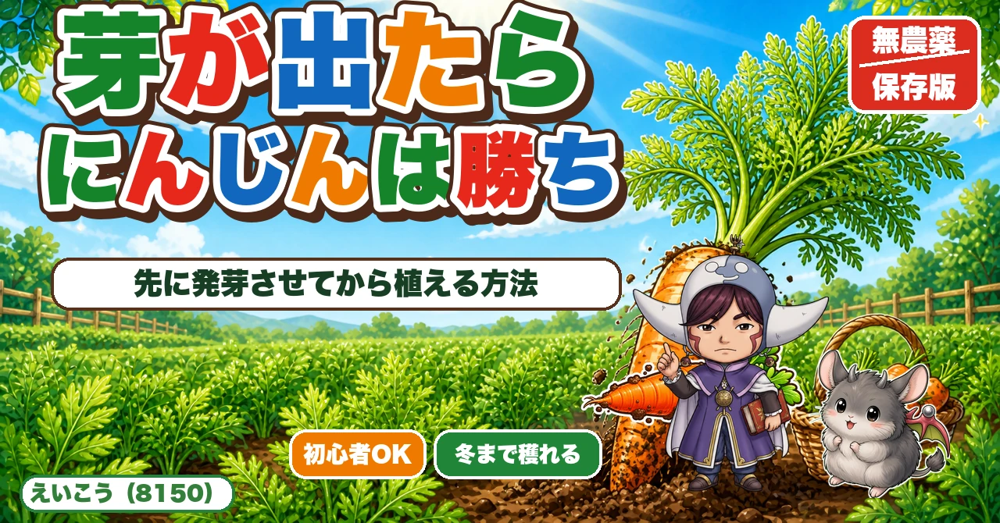
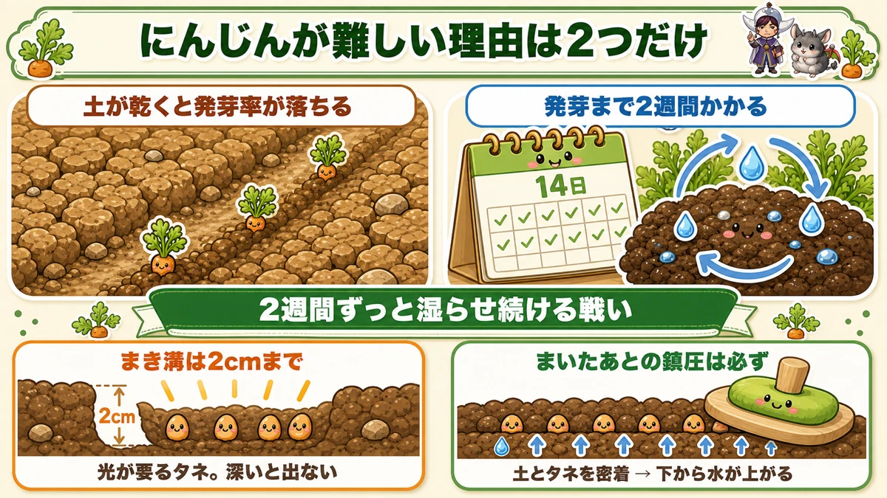
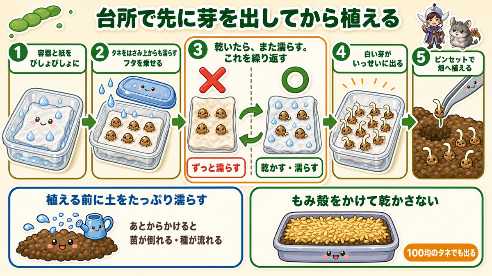
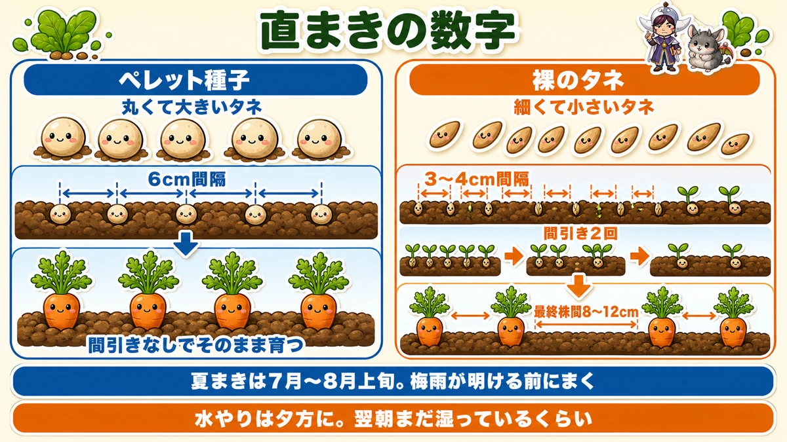
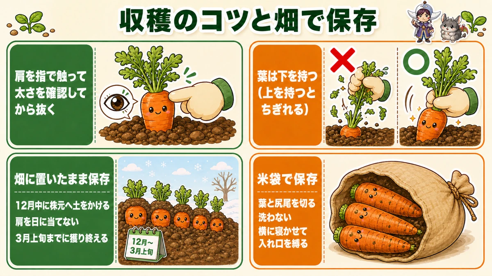

【保存版】にんじんは芽が出たら勝ち🥕 先に発芽させてから植える方法

🗨️「にんじん、まいても芽が出たことがない」
🗨️「毎日水をやってたのに、結局スカスカだった」
🗨️「一度は成功したいけど、もう諦めかけてる」
どうも、8150（えいこう）です🌱 家庭菜園歴8年、理科の教員免許を持っていて、有機・無農薬で野菜を育てています。
今日はにんじんです。
家庭菜園で「難しい野菜は？」と聞くと、けっこうな確率で名前が挙がる野菜ですよね。私も最初の2年は、まいても点々としか生えてこなくて、途中でやめていました。
でも、原因はひとつしかありません。
にんじんは、芽さえ出れば、ほぼ勝ちです。
逆に言うと、失敗している人は全員おなじ場所で脱落しています。発芽です。ここさえ越えれば、あとは放っておいてもけっこう育ちます。
なので今日は、発芽だけに全力を注ぎます。しかも畑で発芽させるのをやめるという、ちょっとズルい方法をお話しします。この方法なら、100均のタネでも芽が出ます。
※以下の時期は中間地（関東〜関西の平野部）が目安。寒い地域は少し遅らせ、暖かい地域は早めに。種の袋にまく時期が書いてあるので、そこもチェック✨️
📖 この記事の目次
栽培データ
- 科：セリ科（仲間＝パセリ・セロリ・三つ葉。同じ場所は1〜2年あける）
- タネまき：夏まき 7月〜8月上旬／春まき 3〜4月
- 植え付け：なし＝畑に直まき（ただし後述の方法なら「芽出しした種」を植える）
- 株間：8〜12cm（ペレット種子なら6cm間隔で間引きなし）
なぜ、にんじんだけこんなに芽が出ないのか

まず理由を知っておくと、対策が腑に落ちます。
にんじんの発芽がむずかしい理由は、2つの条件が重なっているからです。
- ①土が乾いていると、発芽率がガクッと落ちる
- ②発芽までに2週間かかる
この2つが同時に来るのが厄介なんです。つまり2週間ずっと、土の表面を湿らせ続けないといけない。
夏まきの時期を思い出してください。梅雨が明けたあと、1か月近く雨が降らないこともありますよね。そんな中で2週間ずっと湿らせておく。朝晩水をやっても、日中の熱で全部飛びます。
これ、ほぼ運まかせになります。だから点々としか生えてこない。
ついでに、まき方も間違えやすい
もうひとつ、意外な落とし穴があります。
にんじんのタネは、光が当たらないと芽を出しません。
好光性種子といって、光が発芽のスイッチになるタイプです。だから深くまいてはいけない。まき溝は2cmくらいまでにしてください。「しっかり埋めたほうが乾かないだろう」と思って深くすると、逆に出なくなります。
そしてもうひとつ。
まいたあとの鎮圧（上から押さえて土を締めること）は、必ずやってください。
これは省略しがちですが、にんじんでは必須です。土とタネを密着させると、下から水が上がってきて、表面が乾いても種のまわりは湿った状態を保てます。手のひらでぎゅっと、面積が広いときは板や鍬の背で押さえます。
★畑で発芽させるのを、やめてしまう

さて、ここからが今日の本題です。
2週間も土を湿らせ続けるのが大変なら、土の上でやらなければいい。そう考えたのがこの方法です。
台所で芽を出させてから、畑に植えるんです。
やってみると拍子抜けするほど簡単で、しかもほぼ100%出ます。
やり方
- ①プラスチックの容器にキッチンペーパーを敷いて、水でびしょびしょに濡らす
- ②にんじんのタネをばらまいて、紙を折りたたむ。上からもさらに濡らす（水でサンドイッチする感じです）
- ③フタを乗せて、室内に置いておく
ここまでは想像どおりだと思います。問題は次です。
④乾いたら、また濡らす。これを繰り返す
ここ、いちばん大事なところなので詳しく書きますね。
ずっと濡れていると、逆に出ません
私も最初は「乾かしたら死んでしまうのでは」と思って、ずっと湿らせていました。でもこれ、発芽率が良くないんです。
正解は、乾かす → 濡らす → 乾かす → 濡らす、の繰り返しです。
紙がパリパリに乾くまで待って、そこでまたしっかり濡らす。これを数日続けると、ある日いっせいに白い芽が出てきます。もやしみたいな状態になったら成功です。
なぜ繰り返しがいいのか、正直はっきりした理屈は私も説明できません。ただ、これをやると本当に出ます。乾く・濡れるの変化そのものが、タネにとって「季節が動いた」という合図になっているのかもしれませんね。
そして嬉しいのが、100均のタネでも出ることです。安い種だから芽が出ない、という話ではなかったんですよね。ただ、100均の袋は開けてみると量が少ないので、たくさん作る人は普通のタネのほうが割安だと思います。
芽が出たタネを、畑へ植える
あとは植えるだけです。ただし1点だけ、順番を守ってください。
植え付ける前に、土をたっぷり濡らしておく。
これを先にやります。植えたあとに水をやると、まだ根が張っていないので苗が倒れたり、種が流れたりします。先に濡らす、それから植える。この順番です。
芽が出たタネは互いに絡み合っているので、ピンセットでそっとほぐします。正直これがいちばん面倒な作業です。私は途中から、指で適当にちぎってパラパラ置いて、あとで間引く方式に切り替えました。それでも十分育ちます。
植えたら、周りの土を指で押さえてください。ここも大事です。
そして根づくまでは乾かさないこと。にんじんの幼い芽は、乾かすと溶けるようになくなります。上にもみ殻をかけておくと、保湿になってかなり違います。
間引きサイズまで育ったら、「土の表面が乾いたら水やり」に切り替えてOKです。
ふつうに直まきする場合の数字

芽出しをせず、畑に直接まく場合の数字もまとめておきます。
まく間隔
- ペレット種子（コーティングされた丸いタネ）…6cm間隔。これなら間引きなしでそのまま育てられます
- 裸のタネ…3〜4cm間隔でまいて、間引きを2回。最終的に株間8〜12cm
「間引きが面倒」という方は、迷わずペレット種子の6cm間隔がおすすめです。私も畑の面積が広い年はこれにしています。
まく時期
夏まきは7月〜8月上旬。
ここでコツがひとつあって、梅雨が明ける前にまいてしまうことです。明けてしまうと雨が期待できないので、自力で2週間湿らせる戦いになります。
梅雨明け後にまくなら、雨が降った直後を狙ってください。「雨が降ったらすぐまける」ように、うねだけ先に作っておくといいです。
そして水やりは夕方に。日中にやると、高温でお湯になったり、すぐ乾いたりします。夕方たっぷりやって、翌朝まだ湿っているくらいが目安です。
品種
私が気に入っているのは「ベーターリッチ」という品種です。甘みが強くて、病気にも強い。しかも肥料が少なくても育つので、有機でやる人には特にありがたいです。生育も早めです。
春も夏もこれ1本で通せるので、迷ったらこれでいいと思います。
収穫は「肩を触って」決める

にんじんの収穫、ちょっとしたコツが2つあります。
大きさは、目で見ても分からない
にんじんは、大根と違って地上部にほとんど出てきません。青首大根のように「もう太ったな」と目で判断できないんです。
なので、肩の部分を指で触ってください。
土をちょっとよけて、株元の太さを確かめる。太くなっていたらそれを抜く。細ければもう少し置いておく。大きくなったものから順番に穫っていきます。
農家さんは機械で一斉に穫りますが、家庭菜園はこれができるのが強みですよね。食べる分だけ、太ったものから穫ればいい。
葉は「下」を持つ
これ、地味に効きます。
葉の上のほうを持って引っぱると、途中でちぎれます。にんじんの葉は思ったより弱いんです。ちぎれると今度は指が入らなくて、掘り返すはめになります。
必ず株元に近いところを持って、まっすぐ上に引く。それだけで、するっと抜けます。
あと、寒い地域の方へ。朝は土が凍って抜けないことがあります。その場合は日中に収穫してください。
★穫らずに、畑に置いたまま保存する
ここが、この記事のもうひとつの目玉です。
にんじんは、畑に埋めたまま春まで保存できます。
大根も土中保存ができますが、にんじんはもっと簡単です。理由は2つあって、大根ほど水分が多くないことと、もともと地上部に出ていないこと。つまり、ほぼ埋まっている状態なんですよね。
だからやることは、土をかけるだけです。
やり方と時期
- 12月中に、平鍬やスコップで株元に土をかける
- 寒い地域ほど、かける土を厚くする
- 心配ならビニールやブルーシートを上からかける
これだけです。葉が折れたり土に埋まったりしても気にしなくて大丈夫。
寒さについては、最低気温がマイナス8℃まで下がった年でも、土をかけただけで無事だったという話を聞いて、私も安心して任せるようになりました。
暖かい地域でも、土はかけてください
「うちはそんなに寒くないから」という方も、これはやったほうがいいです。
理由は寒さ対策ではなく、日焼け防止です。
肩の部分が土から出て日に当たると、そこが変色します。じゃがいもが日に当たると緑になるのと似た現象ですね。味には大きく影響しませんが、見た目が悪くなります。
ただし、3月上旬まで
これだけは守ってください。
3月になると暖かくなって、にんじんが「春が来た」と勘違いします。すると新しい芽を出し始めて、根の養分がそちらへ移ってしまいます。
なので3月上旬までには穫り終える。ここがタイムリミットです。
穫ってから保存するなら「米袋」
冷蔵庫に入りきらないほど穫れたとき用の話も、少しだけ。
冬のにんじんは、とにかく乾燥に弱いです。だから保存のポイントは、湿り気をどう残すかに尽きます。
- 葉と、根の先（尻尾）をハサミか包丁で切る
- 土は軽く落とすだけ。洗わない
- 少量なら、新聞紙にくるんで冷蔵庫へ
- 大量なら、米袋に横に寝かせて入れて、口を縛る
米袋がいいのは、口を縛れて乾燥を防げるからです。しかもたくさん入って、丈夫で、保温性もある。ホームセンターに中古の米袋が安く売っていますよ。
段ボールを使う場合は、上から新聞紙をかけてからフタを閉じてください。置き場所は倉庫や室内の涼しい暗いところで。
学ぶ：なぜ「乾かす・濡らす」で芽が出るのか🔬
理科の時間です。さっきの裏ワザ、実は理屈があります。
タネにとっていちばん怖いのは、中途半端な時期に芽を出してしまうことです。芽を出した直後に乾いたら、そこで終わりですから。
だからタネは、簡単には芽を出さないようにできています。「本当にもう大丈夫か？」を確かめる仕組みを持っているんですね。
その判断材料のひとつが、水の変化です。
一度だけ濡れたのは、通り雨かもしれない。でも濡れて、乾いて、また濡れて——これが繰り返されるなら、それは雨の季節が来たということ。土の中で起きていることを、タネはこうやって読んでいるわけです。
ずっと濡れっぱなしだと、この「変化」が起きません。だからタネは判断できずに待ち続ける。しかも常に水に浸かっていると、タネも呼吸ができなくて苦しいんです。タネは生きているので、酸素が要ります。
乾かす・濡らすの繰り返しは、「雨季が来たよ」という嘘の合図を送ってあげているわけですね。ちょっと騙しているみたいで、面白くないですか。
お子さんと一緒なら、この実験はかなりおすすめです。透明な容器でやれば、白い根がにょきっと出てくる瞬間が見られます。しかも数日で結果が出る。
そして「土の中でも同じことが起きているんだよ」と伝えると、種まきという作業の見え方が変わると思います☺️
まとめ
ここまで読んでくださって、ありがとうございます！
にんじんは、発芽さえ越えれば急にやさしい野菜になります。
- にんじんが難しいのは、発芽まで2週間ずっと湿らせ続ける必要があるから
- ★台所で先に芽を出させてから植えれば、この問題は丸ごと消える。100均のタネでもOK
- ★コツは「ずっと濡らす」ではなく「乾かす・濡らす」の繰り返し
- 直まきなら、まき溝2cmまで（光が要るタネ）・鎮圧は必ず・水やりは夕方
- 収穫は肩を触って太さを確認。葉は下のほうを持って抜く
- 12月中に土をかければ、畑に置いたまま3月上旬まで保存できる
もし今まで何度か失敗しているなら、次はぜひ台所からやってみてください。芽が出たタネを植えるので、失敗のしようがありません。あの白い根が出てきたときの「あ、いけるわ」という感じ、味わってほしいです🥕
次回は、秋植えの大物「玉ねぎ」。苗選びで9割決まる話と、太い苗を買ってはいけない理由をお話しします🧅
ペレット種子のにんじん
コーティングされた丸いタネなので、6cm間隔でまけば間引きなしでそのまま育てられます。
![[商品価格に関しましては、リンクが作成された時点と現時点で情報が変更されている場合がございます。]](https://hbb.afl.rakuten.co.jp/hgb/565b7811.82562bc6.565b7812.698bf113/?me_id=1411559&item_id=10000090&pc=https%3A%2F%2Fthumbnail.image.rakuten.co.jp%2F%400_mall%2Fatelier-plum%2Fcabinet%2Fcompass1684807440.jpg%3F_ex%3D240x240&s=240x240&t=picttext "[商品価格に関しましては、リンクが作成された時点と現時点で情報が変更されている場合がございます。]")

もみ殻くん炭
植え付けたあと、上にかけて乾燥を防ぎます。にんじんの幼い芽は乾かすと溶けてしまうので、ここが効きます。
![[商品価格に関しましては、リンクが作成された時点と現時点で情報が変更されている場合がございます。]](https://hbb.afl.rakuten.co.jp/hgb/56bc30bc.01c5b89d.56bc30bd.ee310357/?me_id=1231595&item_id=10000412&pc=https%3A%2F%2Fthumbnail.image.rakuten.co.jp%2F%400_mall%2Fplanto-iwa%2Fcabinet%2F2707.jpg%3F_ex%3D240x240&s=240x240&t=picttext "[商品価格に関しましては、リンクが作成された時点と現時点で情報が変更されている場合がございます。]")
米袋
穫れすぎたときの保存用。口を縛れるので乾燥を防げて、たくさん入ります。
![[商品価格に関しましては、リンクが作成された時点と現時点で情報が変更されている場合がございます。]](https://hbb.afl.rakuten.co.jp/hgb/56bc3119.f1f4196c.56bc311a.c9ac6e4e/?me_id=1215024&item_id=10001843&pc=https%3A%2F%2Fthumbnail.image.rakuten.co.jp%2F%400_mall%2Fkminori%2Fcabinet%2Fhozai%2Fimg57520728.jpg%3F_ex%3D240x240&s=240x240&t=picttext "[商品価格に関しましては、リンクが作成された時点と現時点で情報が変更されている場合がございます。]")
あわせて読みたい